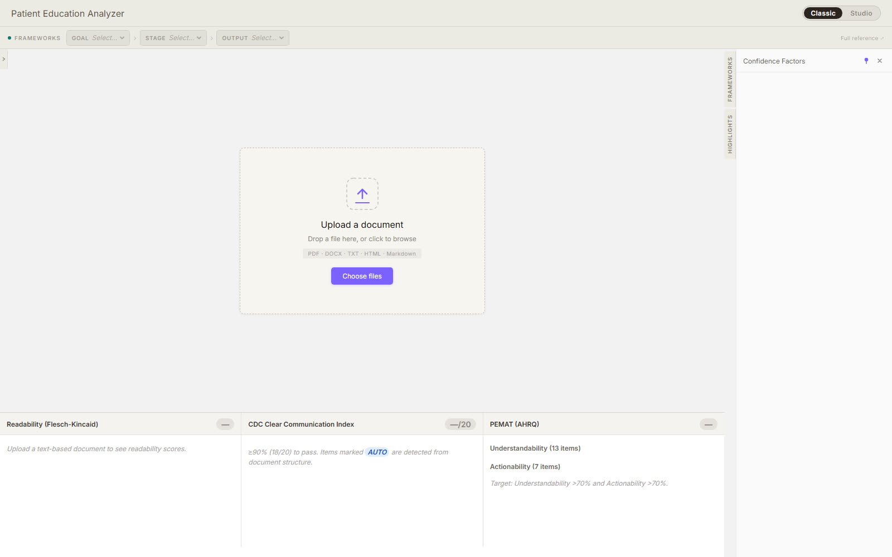
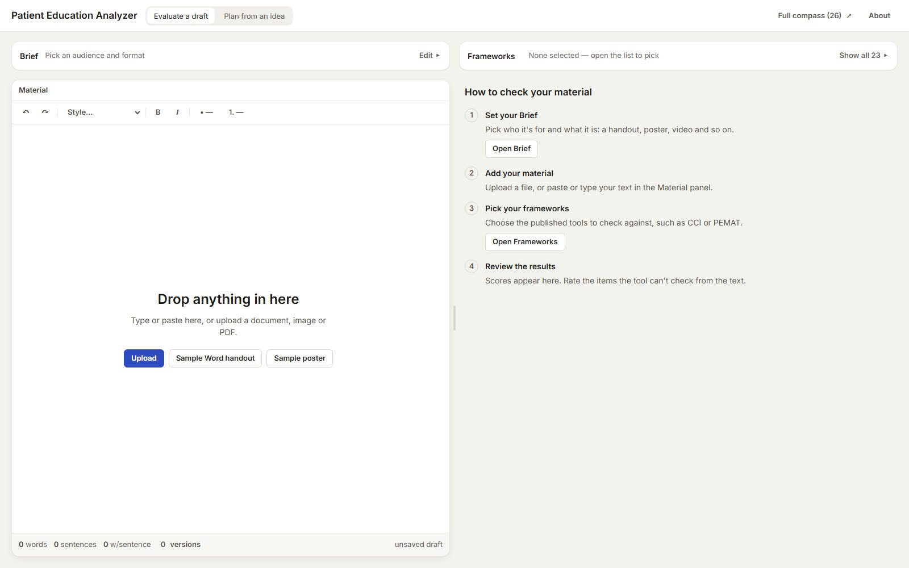

The Barrier
Just Dropped
From napkin sketch to clickable prototype.
 Sonia Seto (1T6)Biomedical communicator and UX designer
Sonia Seto (1T6)Biomedical communicator and UX designer Chloe Ma (2T1)Senior product designer, GoInvo
Chloe Ma (2T1)Senior product designer, GoInvoFeedback: prism@goinvo.com · Code licensed Apache 2.0, designs CC BY 4.0 · Background: generated with Midjourney


The question that started it
50+ posters,
infographics and
illustrations.
“Loved it” isn’t
the same as
“understood it.”
Nobody was checking whether patients could actually follow what we made.
Cricket: generated with Midjourney. Posters: Sonia Seto for UHN. Emoji: Noto animated emoji (CC BY 4.0)


Standards already exist
Standards
already exist.
What if they were all in one place?
Post: Nati Chen on LinkedIn. Screenshot: CDC Clear Communication Index. Background: PRISM’s 14 frameworks


How we met.
- AprilNati’s post. Then 26 frameworks.
- SpringChloe’s post. Sonia reaches out.
- SummerWe scope it with our networks.
- AugustWe start building.
Posts: Nati Chen and GoInvo on LinkedIn, April 2026. Background: generated with Midjourney


Built for healthcare teams,
written for every reader.
Health writing
anyone can read.
Checking a handout today
- Checks live in scattered tools, each wanting a different format
- Dozens of checklists; knowing which fit is a job in itself
- Poster checks sit on separate, clunky sites
- Checkers list the problems, then leave the rewrite to you
- Patient material can’t go to cloud tools
- Hard to trust where a rule comes from
Six problems, six places. No answer you can show.
What we
brought.
Sonia: the framework idea
Had never used Claude or tools like it.
Chloe: AI fluency, open source
Had never heard of these frameworks.
Each knew what the other didn’t.
Background: The Creation of Adam, Michelangelo, c. 1512, public domain. Flowers and motion: Veo (Google Gemini)
Camera phones didn’t end photography.
They made everyone
a photographer.
AI just did that for software.
Video: “Shot on iPhone 18 Pro: new trick”, Apple
The water-pill handout, before and after PRISM
Before
Your physician has prescribed furosemide, a diuretic, to reduce edema by increasing your urinary output. Administer one tablet orally each morning with food, monitor your weight daily, and contact the clinic immediately if you experience a weight gain exceeding 2 pounds within a 24-hour period, as this may indicate fluid retention. Approximately 25% of patients experience orthostatic hypotension during the initial weeks of treatment.
PRISM diagnoses
Medical words
diuretic → water pill, edema → swelling
…and 6 more.
Based on: PEMAT-P · CDC Everyday Words
Longest sentence
3 sentences became 8.
Plain language: under 20.
Based on: Federal Plain Language Guidelines
Risk numbers
A bare percentage became a count people can picture.
Based on: Gigerenzer & Hoffrage, natural frequencies
Reading grade
University level → grade 3.
Handouts aim for grade 6 or lower.
Based on: Flesch-Kincaid grade level
After PRISM
Your doctor gave you furosemide, a water pill. It brings down swelling by making you pee more. Take one pill by mouth each morning with food. Check your weight every day. Call the clinic right away if you gain more than 2 pounds in one day. This may mean your body is holding fluid. About 1 in 4 people feel dizzy when they stand up in the first weeks. Stand up slowly.
Sonia's COVID poster, before and after PRISM
Before

PRISM diagnoses
Lines too faint to read easily
The help band, 2 captions and “metres” now pass AAA.
Based on: WCAG 1.4.6
Jargon
“self-screening poster” → “poster at the door”.
Based on: CDC Everyday Words
Faintest text
“Ask us if you need help” is 3.7 times as easy to see.
Based on: WCAG 1.4.3
Colour-blind check ✓


Based on: WCAG 1.4.1
After PRISM · AAA

Poster: COVID welcome poster for UHN (June 2022), designed by Sonia Seto
Any tool is only useful if you trust it
Keep · 7
- CCI
- PEMAT-P
- SAM
- CDC Inclusive
- UPL
- EPPM
- Readability
With caveats · 8
- IPDAS
- PEMAT-A/V
- CDC IDD/ELL
- DISCERN
- COM-B
- Ottawa DSF
- Teach-Back
- PAM
Brought back · 4
- HBM
- TTM
- NCI Pink Book
- EBCD
If in scope · 4
- SHARE
- AHRQ Toolkit
- Picker
- WHO ERC
Cut · 9
- EQIP
- Plain Language
- PCORI
- OPTION
- CAHPS
- NPS
- Beryl PX
- Planetree
- SEIPS
Background: the 23 frameworks the review vetted through, and 9 are cut
Certify the work, not the AI.
A person signs off each screen as safe for patients, against:
Safety · Data integrity · Regulatory fit · Usability · Language · Bias · Flow
Illustration by Chloe Ma, animated with Veo (Google Gemini), from Human-Assisted AI Design Certification for Healthcare
14 frameworks, one list
Animation: made in code with Remotion
A real guide, 67 fixes in one click.
Material: A Guide to Negotiating Patient Digital Rights, The Light Collective and Digital Public, CC BY 4.0, designed by Chloe Ma, GoInvo
One more thing
Nothing leaves your browser.
Every fix cites its standard.
Better, and you can show why.
Check a draft.
Drop it inYour file stays on this computer. Nothing is uploaded.
BriefPatients, manual: grade 6 or lower, 6,000 words at most.
FrameworksPicked for your Brief. Browse all 14, sort them, filter to scored.
Plain languageJump to a flag, fix one, edit by hand or apply all. Undo or revert.
Material: A Guide to Negotiating Patient Digital Rights, The Light Collective and Digital Public, CC BY 4.0, designed by Chloe Ma, GoInvo
Check a poster.
New exampleClear all, then drop in a poster.
Alt text and colour contrastWrite alt text. Check colour pairs; a fail comes with a fix to preview.
Colour blindnessSee it as colour-blind readers do, and in greyscale.
Framework CompassAll 14 frameworks: how each is scored, and where it comes from.
Poster: COVID welcome poster for UHN (June 2022), designed by Sonia Seto
29 hours
of building, over 16 days.
- 131commits
- 23sittings
- 23Mtokens
- 0developers
/ Hours from commit times. Tokens: Chloe’s Claude Code, Aug 17 to Nov 4. Video: room by Nano Banana (Google Gemini), animated in code.
- Intent first.Know what you’re here for.
- Build fast.AI is quick, and great for brainstorming.
- Iterate.Show it, change it, cut it back.
AI gives you the average. You’re the designer.
From napkin to prototype


What’s your view
on our approach?
- Open sourceFree to use and extend.
- See the gapsWhere frameworks overlap, and don’t.
- Build with usCollaborators and feedback welcome.
Sonia Seto — content and patient-education expertise · Chloe Ma — design of PRISM and of this presentation
Appendix

Appendix · 1
Bring it in, start checking
The problem
The checks live in scattered tools, and each wants your draft in a different form.
What PRISM does
- Paste in or drop a file
- Start from an example to learn how it works
- Set the Brief, and the checks begin


Appendix · 2
Pick the right checks
The problem
There are many published checklists for health writing. Knowing which fit your material, and tracking each one, is a job in itself.
What PRISM does
- Picks the frameworks that fit your readers
- Shows what every framework asks for, in one place
- Tells you which items need your judgement, and why
- Suggests fixes you can apply in one click
- Saves every change, so you can go back
Material: A Guide to Negotiating Patient Digital Rights, The Light Collective and Digital Public, CC BY 4.0, designed by Chloe Ma, GoInvo
Appendix · 3
Check a poster
The problem
Contrast checkers, colour-blind simulators and alt text guides are scattered across separate, clunky sites. No one place does it all.
What PRISM does
- Tests alt text against WCAG 1.1.1 and your reading level
- Checks colour pairs, and suggests a fix
- Shows it as colour-blind readers see it
Poster: COVID welcome poster for UHN (June 2022), designed by Sonia Seto
Appendix · 4
Fix it your way
The problem
Checkers list the problems, then leave the rewriting, and keeping track of it, to you.
What PRISM does
- Edit right in the text
- Apply a suggested rewrite, or all of them
- Write your own in New, then apply it
- Every change is a version you can go back to
Material: A Guide to Negotiating Patient Digital Rights, The Light Collective and Digital Public, CC BY 4.0, designed by Chloe Ma, GoInvo
Appendix · 5
Bring it in, start checking
The problem
The checks live in scattered tools, and each wants your draft in a different form.
What PRISM does
- Paste text from anywhere
- Drop in a Word file, PDF, text or image
- Start from an example to learn how it works
- Set the Brief, and the checks begin
Material: A Guide to Negotiating Patient Digital Rights, The Light Collective and Digital Public, CC BY 4.0, designed by Chloe Ma, GoInvo
Appendix · 6
Pick the right checks
The problem
There are many published checklists for health writing. Knowing which fit your material, and tracking each one, is a job in itself.
What PRISM does
- Picks the frameworks that fit your readers
- Shows what every framework asks for, in one place
- Tells you which items need your judgement, and why
- Suggests fixes you can apply in one click
- Saves every change, so you can go back
Material: A Guide to Negotiating Patient Digital Rights, The Light Collective and Digital Public, CC BY 4.0, designed by Chloe Ma, GoInvo
The question that started it
Did my visual actually make a difference?
My work left at handoff. I never learned if it helped.
Image: generated with Midjourney, animated with Veo (Google Gemini) and in code

.jpg){kind=link}
“Loved it” isn’t
the same as
“understood it.”
Nobody was checking whether patients could actually follow what we made.
Image: generated with Midjourney, outlined in code
Normally: developers, a budget, months of work. I had none of those.
If you understand
the problem, you can
build the tool yourself.
Drawings: generated with Midjourney, assembled in code
Three homepages in 18 hours.
use the framework list we already have, build a tool that checks patient handouts against it, make a [stepped guidance] so people know where to start, show scores as cards
0 h · Jul 31
In empty space, give big simple bullet point steps to guide user through, upload/paste text, select framework etc. Vet entire site for font treatments … we should only use max of 8 treatments throughout
10 h · Oct 16
I like logo 3, implement while use the yellow as theme color, adjust color palette to include it. disregard the font, keep current
18 h · Oct 19
What got better
- Frameworks up top
- One upload box
- Scores as cards
What got better
- All on one page
- Drop Word or PDF
- Steps show you how
- Simpler panels
What got better
- New PRISM logo
- Yellow brand colour
- One button style
- One type system



Review builds trust
# | Framework | Full name | Zone | Output | Modes | Role | Decision | Plan mode use | Evaluate mode use | Why / notes | To verify | Source |
1 | CCI | CDC Clear Communication Index | Clarity & content | Score | Both | Audit | Keep | Design target: main message, behavioural guidance, numbers presented clearly. | Scores the draft against the 20 items. | The most unambiguous of the set; natural anchor for the Document Audit screen. | Confirm the 20-item count and the 90% pass threshold against the CDC source. | CDC Clear Communication Index |
2 | PEMAT-P | Patient Education Materials Assessment Tool (printable) | Clarity & content | Score | Both | Audit | Keep | Design target for understandability and actionability. | Two scores: understandability and actionability. | Built for exactly this use; separates 'can they understand it' from 'can they act on it'. | Confirm item count and the 70% threshold. | AHRQ PEMAT-P |
3 | SAM | Suitability Assessment of Materials | Clarity & content | Score | Both | Audit | Keep | Design target for graphics, layout and literacy demand. | Scores the draft factor by factor. | Most granular on graphics and layout. Some factors (e.g., cultural fit) need rater judgment. | Item count: earlier in this thread I cited 26 criteria; 22 factors is the commonly cited count. Confirm against the source. | Doak, Doak & Root (1996), via KP Washington Research |
4 | CDC Inclusive Comms | CDC Health Equity Guiding Principles for Inclusive Communication | Clarity & content | Checklist | Both | Audit | Keep | Preferred terms and principles to write with. | Checks the draft's language against the principles. | Covers equity, which the scored tools miss. Preferred-term checks could be partly automated. | Confirm the current version. | Calanan et al., Preventing Chronic Disease (2023) |
5 | UPL | Universal Patient Language Best Practices (Bristol Myers Squibb) | Clarity & content | Checklist | Both | Audit | Keep | Best practices to build the content around. | Yes/no checks against the draft. | Relevant to pharma; overlaps somewhat with CCI. | Your file says 9 best practices; an earlier search described 7 principles. Check the guidance document. | UPL Guidance Document (PDF) |
6 | EPPM | Extended Parallel Process Model | Behaviour change | Checklist | Both | Lens | Keep | Pair every risk message with a clear, doable action. | Checks whether risk messages in the draft come with an action. | The one behaviour model that can be checked at message level. | Witte (1992) | |
7 | IPDAS | International Patient Decision Aid Standards | Decisions & conversations | Partial | Both | Audit | Keep (conditional) | Standards to design a decision aid to. | Checks a decision aid against the criteria. | Only applies to decision aids; output is partial rather than a clean score. | Ottawa Hospital Research Institute | |
8 | PEMAT-A/V | PEMAT for audiovisual materials | Clarity & content | Score | Both | Audit | Keep (conditional) | Design target for video and multimedia. | Scores a video or multimedia draft. | Same logic as PEMAT-P. Only matters if the tool will accept video. | Scope decision for you and Chloe: will the tool accept video? | AHRQ PEMAT-A/V |
9 | CDC IDD/ELL | CDC tool for adults with intellectual disability or extreme low literacy | Clarity & content | Score | Both | Audit | Keep (conditional) | Design target for very-low-literacy audiences. | Scores the draft on the score sheet. | Only for readers with IDD or very low literacy. Keep if the intake can route to it. | Confirm the 27-item count and that the niche fits your users. | CDC Stacks (PDF) |
10 | Readability | Flesch Reading Ease and Flesch-Kincaid Grade | Clarity & content | Score | Evaluate only | Audit | Keep | At most, set a target reading grade. | Computes grade and ease automatically. | The only fully automatable entry. Narrow but cheap and reliable. Candidate to expand with other formulas (see Consider adding tab). | Flesch (1948) | |
11 | DISCERN | Quality of written information about treatment choices | Clarity & content | Score | Evaluate only | Audit | Keep (conditional) | — | Rates the quality of treatment-choice information. | Needs subject-matter judgment, and only applies to treatment-choice material. | University of Oxford | |
12 | COM-B | Capability, Opportunity, Motivation – Behaviour model | Behaviour change | Checklist | Plan only | Lens | Keep (judgment call) | Diagnose capability, opportunity and motivation before designing. | — | Most usable behaviour model for design work. First to cut if the library goes strictly document-centred. | Michie, van Stralen & West (2011) | |
13 | HBM | Health Belief Model | Behaviour change | Checklist | Plan only | Lens | Bring back | Shape the message around beliefs about risk, barriers and benefits. | — | Was parked because it can't score a document. It clearly helps someone planning a resource. | Rosenstock (1974) | |
14 | TTM | Transtheoretical Model (Stages of Change) | Behaviour change | Checklist | Plan only | Lens | Bring back | Match the message to the audience's readiness to change. | — | Was parked because it can't score a document. It clearly helps someone planning a resource. | Prochaska & Velicer (1997) | |
15 | Ottawa DSF | Ottawa Decision Support Framework | Decisions & conversations | Partial | Plan only | Lens | Keep (judgment call) | Identify decisional needs before building a decision aid. | — | Underpins decision aids; sits next to IPDAS. Could be cut for a strictly document-centred library. | Ottawa Hospital Research Institute | |
16 | Teach-Back | Teach-Back Method | Decisions & conversations | Checklist | Plan only | Lens | Keep (judgment call) | Design materials that support teach-back. | — | A technique, not a rubric. A draft can only be partly checked for prompts that support it. Practitioners recognise it immediately. | AHRQ Toolkit, Tool 5 | |
17 | NCI Pink Book | Making Health Communication Programs Work (National Cancer Institute) | Clarity & content | Method / guide | Plan only | Lens | Bring back | Audience research, message pretesting and evaluation planning for a communication program. | — | Back from the old chart. A planning guide whose pretesting step leads naturally into evaluate mode. Program-level rather than single-handout. | This is the 2002 edition; check whether NCI has published a newer one. | NCI Pink Book (PDF) |
18 | EBCD | Experience-Based Co-Design | Experience & partnership | Method / guide | Plan only | Lens | Bring back | Co-design improvements with patients and staff; closest match to the human-centred design methods you wanted to name for your work sample. | — | Back from the old chart. Fits best for care pathways and services, less for a single handout. Replaces PCORI as the patient-partnership entry. | Toolkit was last updated in 2013; a King's College London / Picker project describes a planned redesign, so check for the current version. | Point of Care Foundation EBCD toolkit |
19 | PAM | Patient Activation Measure | Experience & partnership | Score | Plan only | Outcome | Keep (check licensing) | Choose how you will measure patient impact after launch. | — | Measures the patient, not the resource, so it can't evaluate a draft. It is the bridge from 'was the resource well made' to 'did it help patients'. | Licensed instrument (Insignia Health charges a licensing fee): confirm what you can include beyond a reference link. DOI confirmed. | Hibbard et al. (2004), Health Services Research |
20 | SHARE | The SHARE Approach | Decisions & conversations | Checklist | Plan only (if scope fits) | Lens | Scope-dependent | Frame shared decision-making conversations around the resource. | — | Structures a clinical conversation. Only relevant if plan mode covers care pathways or programs. | AHRQ | |
21 | AHRQ Toolkit | AHRQ Health Literacy Universal Precautions Toolkit | Decisions & conversations | Checklist | Plan only (if scope fits) | Lens | Scope-dependent | Organisational practices around a resource; includes tools on designing materials. | — | Organisational practice change. Only relevant if plan mode covers programs or services. | AHRQ | |
22 | Picker | Picker Principles of Person Centred Care | Experience & partnership | Checklist | Plan only (if scope fits) | Lens | Scope-dependent | Principles for designing care pathways and services. | — | Care-model principles, closest to 'experience as a whole'. Fits only if plan mode covers pathways or services. | Picker | |
23 | WHO ERC | WHO Emergency Risk Communication guideline | Behaviour change | Checklist | Plan only (if scope fits) | Lens | Scope-dependent | Principles for planning urgent or crisis communications. | — | Agency-level emergency communication. Relevant only if practitioners write urgent or crisis materials. | Add an interview question: do practitioners write urgent or crisis communications? | World Health Organization (2017) |